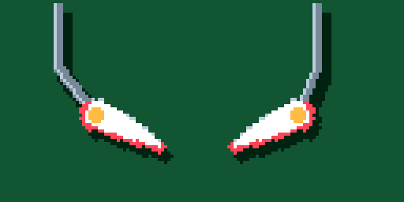
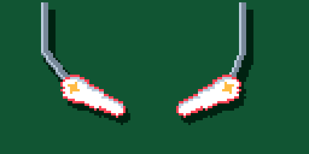
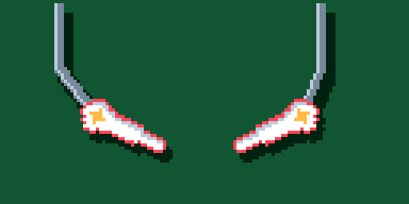
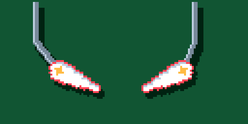
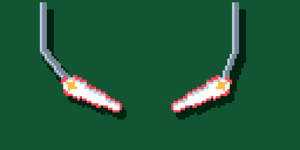

00 · Previous

The earlier game sprite, preserved as the reference. Design 10 is now active.
10, Full curved bat, is now the active game sprite. 00 preserves the previous design; 01–10 have balanced source outlines. All use the same palette, pivot, press/release timing, pose generator and board-tinted shadows.

The earlier game sprite, preserved as the reference. Design 10 is now active.
Rounded heel, gradual taper and a soft two-pixel nose.
Narrow body with a small rounded tip.

Broad middle and a substantial, softly rounded nose.
Earlier taper into a slender, rounded reach.
A fuller end cap with a smooth three-pixel tip radius.
Shorter reach and a gentle taper to a round tip.

A large round heel flowing quickly into a lean middle.

A fuller upper half that tapers later toward a small nose.

A compact pivot cap with a continuous narrow body.
A generous round heel and softly tapering, broad contact face.